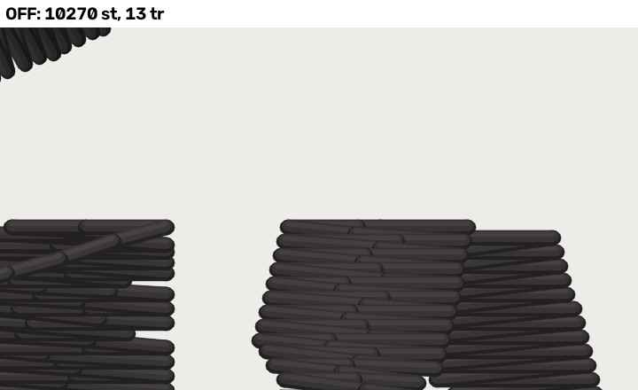
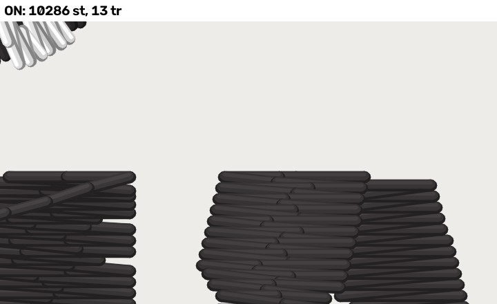
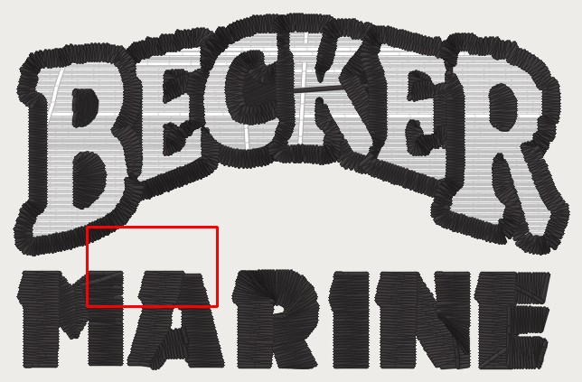
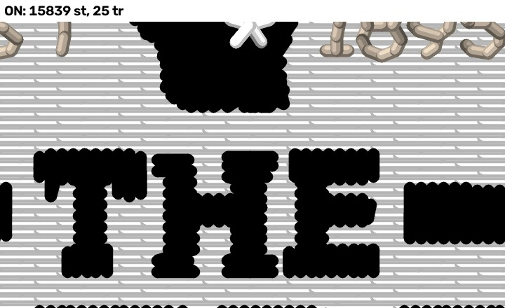
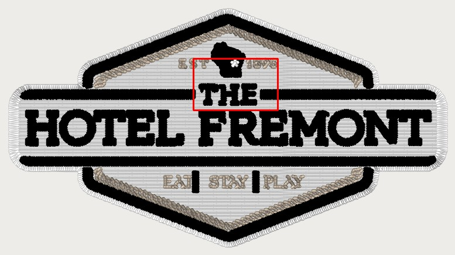
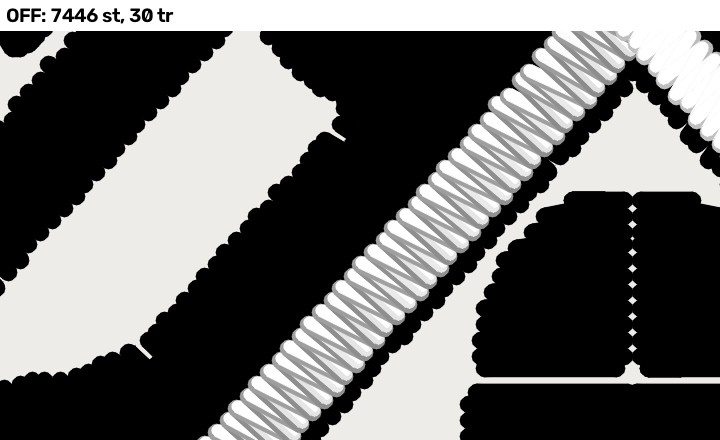
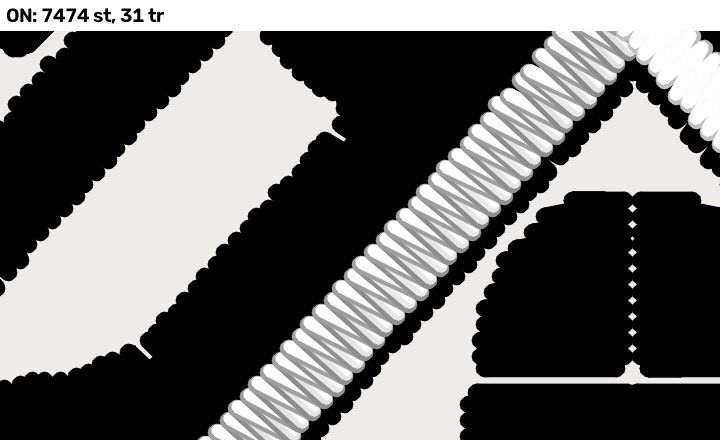
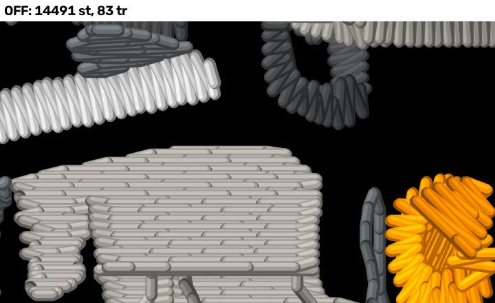
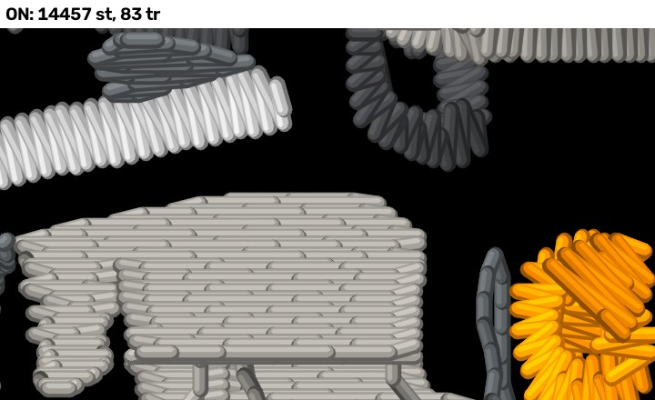

Flip sheet 2026-10-29 — OFF | ON | pro
Layout flags built OFF, each rendered where it changes stitches beside the professional's file for the same job (hat preset at the pro's width). 40 px/mm: a 0.4 mm thread is 16 px. The flips are Kent's.
| flag (PR) | fixture | OFF | ON | pro | needle points changed |
|---|---|---|---|---|---|
edge_cap_satin (#1191, LAYOUT) | hotel_fremont_hat | 15,865 st / 25 tr / 3 cc / 0 | 15,865 st / 25 tr / 3 cc / 0 | 17,067 st / 21 tr / 10 cc / n/a (DST has no roles) | none (no change) |
edge_cap_satin (#1191, LAYOUT) | becker_hat_small | 10,270 st / 13 tr / 1 cc / 0 | 10,286 st / 13 tr / 2 cc / 1 | 8,694 st / 11 tr / 4 cc / n/a (DST has no roles) | 16 |
edge_cap_satin (#1191, LAYOUT) | gaulke_roofing_hat | 7,446 st / 30 tr / 1 cc / 0 | 7,446 st / 30 tr / 1 cc / 0 | 6,138 st / 42 tr / 0 cc / n/a (DST has no roles) | none (no change) |
edge_cap_satin (#1191, LAYOUT) | precision_drone | 14,491 st / 83 tr / 9 cc / 0 | 14,491 st / 83 tr / 9 cc / 0 | 14,552 st / 59 tr / 22 cc / n/a (DST has no roles) | none (no change) |
edge_cap_bean_legacy (#1191, LAYOUT) | hotel_fremont_hat | 15,865 st / 25 tr / 3 cc / 0 | 15,839 st / 25 tr / 3 cc / 0 | 17,067 st / 21 tr / 10 cc / n/a (DST has no roles) | 430 |
edge_cap_bean_legacy (#1191, LAYOUT) | becker_hat_small | 10,270 st / 13 tr / 1 cc / 0 | 10,270 st / 13 tr / 1 cc / 0 | 8,694 st / 11 tr / 4 cc / n/a (DST has no roles) | none (no change) |
edge_cap_bean_legacy (#1191, LAYOUT) | gaulke_roofing_hat | 7,446 st / 30 tr / 1 cc / 0 | 7,474 st / 31 tr / 2 cc / 2 | 6,138 st / 42 tr / 0 cc / n/a (DST has no roles) | 28 |
edge_cap_bean_legacy (#1191, LAYOUT) | precision_drone | 14,491 st / 83 tr / 9 cc / 0 | 14,457 st / 83 tr / 10 cc / 1 | 14,552 st / 59 tr / 22 cc / n/a (DST has no roles) | 116 |
edge_cap_satin (PR #1191) LAYOUT
LAYOUT: judged from these renders (Kent 2026-10-22). Sets {"edge_cap": "satin"}.
| fixture | engine | OFF | ON | pro | change | travel OFF (mm) | travel ON (mm) |
|---|---|---|---|---|---|---|---|
| hotel_fremont_hat | engine 44ecf1cb | 15,865 st · 25 tr · 3 cc | 15,865 st · 25 tr · 3 cc | 17,067 st · 21 tr · 10 cc | none | exp 9.1 · bare 0.00/0.00/0.00 · off-body 0.0 | exp 9.1 · bare 0.00/0.00/0.00 · off-body 0.0 |
| becker_hat_small | engine 44ecf1cb | 10,270 st · 13 tr · 1 cc | 10,286 st · 13 tr · 2 cc | 8,694 st · 11 tr · 4 cc | 16 points | exp 40.8 · bare 4.61/3.69/3.28 · off-body 0.0 | exp 40.8 · bare 4.61/3.69/3.28 · off-body 0.0 |
| gaulke_roofing_hat | engine 44ecf1cb | 7,446 st · 30 tr · 1 cc | 7,446 st · 30 tr · 1 cc | 6,138 st · 42 tr · 0 cc | none | exp 16.7 · bare 5.99/5.26/4.22 · off-body 0.0 | exp 16.7 · bare 5.99/5.26/4.22 · off-body 0.0 |
| precision_drone | engine 44ecf1cb | 14,491 st · 83 tr · 9 cc | 14,491 st · 83 tr · 9 cc | 14,552 st · 59 tr · 22 cc | none | exp 39.7 · bare 2.54/2.12/1.27 · off-body 0.0 | exp 39.7 · bare 2.54/2.12/1.27 · off-body 0.0 |
edge_cap_satin (PR #1191) · hotel_fremont_hat at 92.5 mm · engine 44ecf1cb
⚠ OFF is the shipped engine: edge_cap 'bean', which bean_only_lines (ON since 2026-10-27) turns into no cap. ON is the satin style, the one cap style still live. docs/edge-cap-remeasure-2026-10-29.md has the silhouette and size sweep.
No change on this fixture (byte-identical DST).
edge_cap_satin (PR #1191) · becker_hat_small at 76.5 mm · engine 44ecf1cb
⚠ OFF is the shipped engine: edge_cap 'bean', which bean_only_lines (ON since 2026-10-27) turns into no cap. ON is the satin style, the one cap style still live. docs/edge-cap-remeasure-2026-10-29.md has the silhouette and size sweep.
edge-cap runs. 16 needle points differ, 16 in this 18 x 11 mm crop at [-28.0, 4.5, -10.0, 15.5] mm (plan frame). Sets {"edge_cap": "satin"}.




edge_cap_satin (PR #1191) · gaulke_roofing_hat at 114.2 mm · engine 44ecf1cb
⚠ OFF is the shipped engine: edge_cap 'bean', which bean_only_lines (ON since 2026-10-27) turns into no cap. ON is the satin style, the one cap style still live. docs/edge-cap-remeasure-2026-10-29.md has the silhouette and size sweep.
No change on this fixture (byte-identical DST).
edge_cap_satin (PR #1191) · precision_drone at 62.6 mm · engine 44ecf1cb
⚠ OFF is the shipped engine: edge_cap 'bean', which bean_only_lines (ON since 2026-10-27) turns into no cap. ON is the satin style, the one cap style still live. docs/edge-cap-remeasure-2026-10-29.md has the silhouette and size sweep.
No change on this fixture (byte-identical DST).
edge_cap_bean_legacy (PR #1191) LAYOUT
LAYOUT: judged from these renders (Kent 2026-10-22). Sets {"edge_cap": "bean", "bean_only_lines": false}.
| fixture | engine | OFF | ON | pro | change | travel OFF (mm) | travel ON (mm) |
|---|---|---|---|---|---|---|---|
| hotel_fremont_hat | engine 44ecf1cb | 15,865 st · 25 tr · 3 cc | 15,839 st · 25 tr · 3 cc | 17,067 st · 21 tr · 10 cc | 430 points | exp 9.1 · bare 0.00/0.00/0.00 · off-body 0.0 | exp 9.1 · bare 0.00/0.00/0.00 · off-body 0.0 |
| becker_hat_small | engine 44ecf1cb | 10,270 st · 13 tr · 1 cc | 10,270 st · 13 tr · 1 cc | 8,694 st · 11 tr · 4 cc | none | exp 40.8 · bare 4.61/3.69/3.28 · off-body 0.0 | exp 40.8 · bare 4.61/3.69/3.28 · off-body 0.0 |
| gaulke_roofing_hat | engine 44ecf1cb | 7,446 st · 30 tr · 1 cc | 7,474 st · 31 tr · 2 cc | 6,138 st · 42 tr · 0 cc | 28 points | exp 16.7 · bare 5.99/5.26/4.22 · off-body 0.0 | exp 16.7 · bare 5.99/5.26/4.22 · off-body 0.0 |
| precision_drone | engine 44ecf1cb | 14,491 st · 83 tr · 9 cc | 14,457 st · 83 tr · 10 cc | 14,552 st · 59 tr · 22 cc | 116 points | exp 39.7 · bare 2.54/2.12/1.27 · off-body 0.0 | exp 39.7 · bare 2.54/2.12/1.27 · off-body 0.0 |
edge_cap_bean_legacy (PR #1191) · hotel_fremont_hat at 92.5 mm · engine 44ecf1cb
⚠ The bean cap as it sewed 2026-09-11 to 10-27, with bean_only_lines OFF so the bean style is not turned off. bean_only_lines OFF also moves bean letters and the run tier, so ON differs from OFF in more than the cap: read the rings.
edge-cap runs. 430 needle points differ, 336 in this 18 x 11 mm crop at [-7.4, -14.8, 10.6, -3.8] mm (plan frame). Sets {"edge_cap": "bean", "bean_only_lines": false}.



edge_cap_bean_legacy (PR #1191) · becker_hat_small at 76.5 mm · engine 44ecf1cb
⚠ The bean cap as it sewed 2026-09-11 to 10-27, with bean_only_lines OFF so the bean style is not turned off. bean_only_lines OFF also moves bean letters and the run tier, so ON differs from OFF in more than the cap: read the rings.
No change on this fixture (byte-identical DST).
edge_cap_bean_legacy (PR #1191) · gaulke_roofing_hat at 114.2 mm · engine 44ecf1cb
⚠ The bean cap as it sewed 2026-09-11 to 10-27, with bean_only_lines OFF so the bean style is not turned off. bean_only_lines OFF also moves bean letters and the run tier, so ON differs from OFF in more than the cap: read the rings.
edge-cap runs. 28 needle points differ, 14 in this 18 x 11 mm crop at [-15.9, -8.3, 2.1, 2.7] mm (plan frame). Sets {"edge_cap": "bean", "bean_only_lines": false}.



edge_cap_bean_legacy (PR #1191) · precision_drone at 62.6 mm · engine 44ecf1cb
⚠ The bean cap as it sewed 2026-09-11 to 10-27, with bean_only_lines OFF so the bean style is not turned off. bean_only_lines OFF also moves bean letters and the run tier, so ON differs from OFF in more than the cap: read the rings.
edge-cap runs. 116 needle points differ, 64 in this 18 x 11 mm crop at [-18.0, -18.8, 0.0, -7.8] mm (plan frame). Sets {"edge_cap": "bean", "bean_only_lines": false}.

